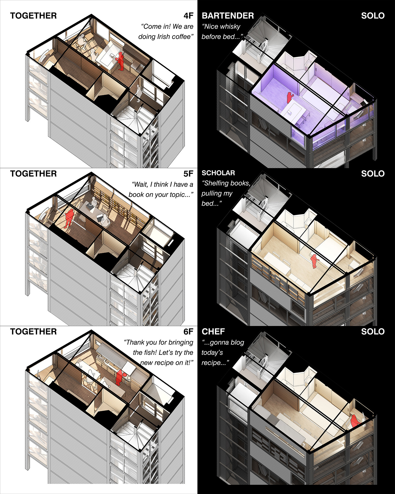
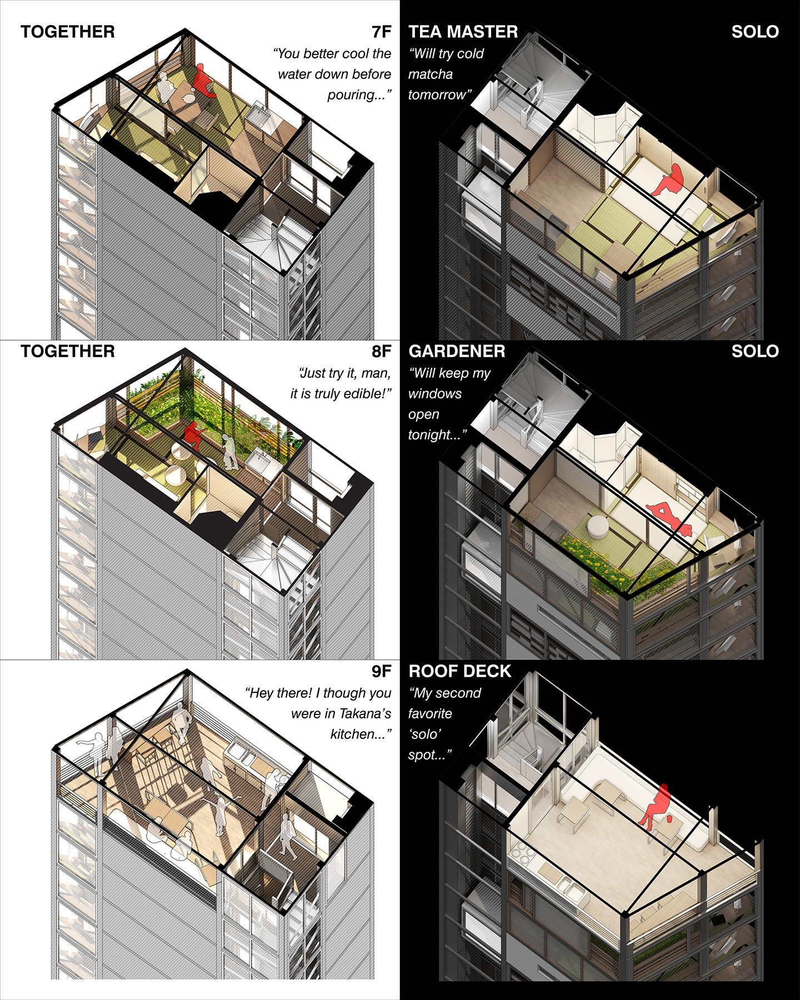
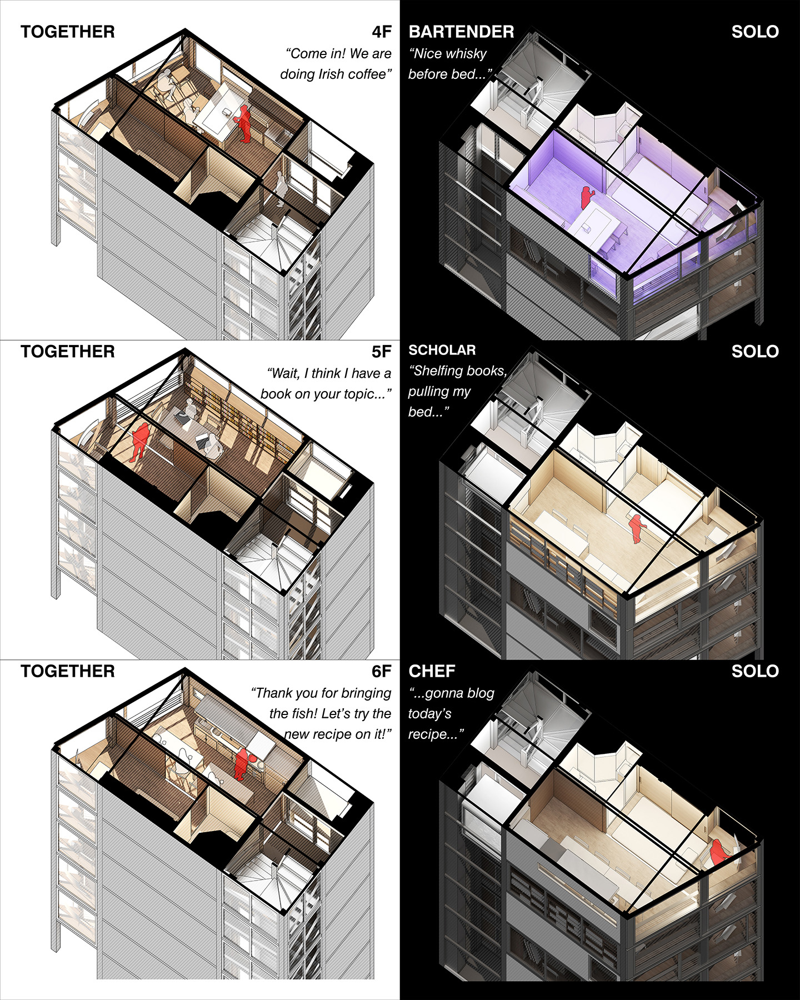
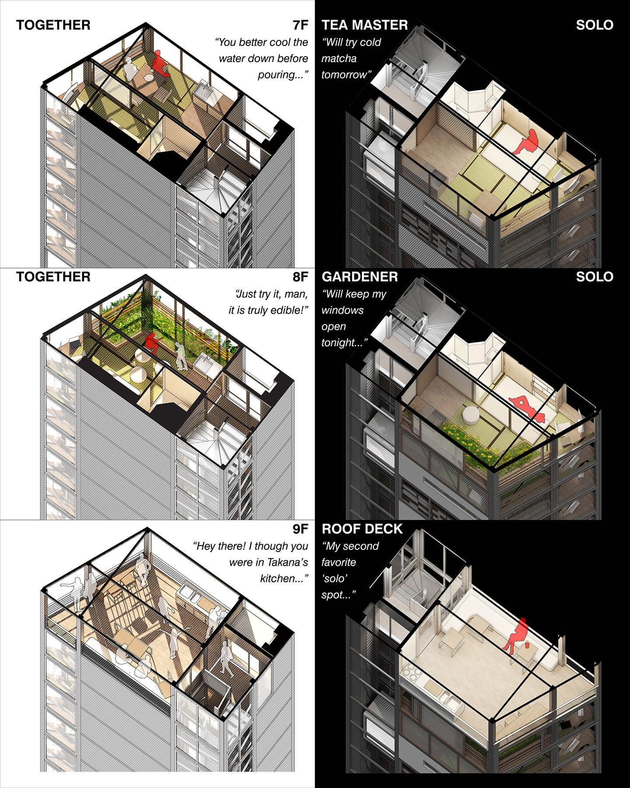

TOKYO PENCIL BUILDING
In Japan’s post-bubble age of declining birthrate and low marriage rate, Tokyo sustains a thriving market of dwelling-for-one for the city’s education and
employment opportunities drawing young single migrants. The demand for independent and affordable space shines lights on pencil building: a vernacular typology
of tall buildings standing on tiny footprints resulted from subdivision of land ownership under intensive land use. Despite having a humble figure with design
constraints, pencil buildings make perfect solo dwellings for the compact layouts that make each floor a self-contained unit. Besides, pencil building’s high-density
contexts usually offer dining and recreational amenities within walking distances to fulfill one’s daily living. On the other hand, the one-unit-per-floor paradigm
informs social isolation problems in solo living, which has increasingly become a significant challenge to contemporary Japanese society. While offering spatial
independence without a ‘troublesome next-door,’ the vertical separation of pencil building dwellings reduces neighbors’ daily interaction to occasional noddings
at elevators and mailboxes.
This project aims to advance pencil building’s spatial efficiency and dwelling independence for a solo future while challenging the isolation issues of existing
paradigms. By arranging the interior space upon specifications of “private realm”, “sharable realm upon my will,” and “other person’s realm,” the project creates
an alternative concept of one-unit-per-floor layout that allows one to customize a sharable space for activities of personal interest, open it to the others for
participation or simply show-off, and visit next-floors for their sharable activities. To fit both the private and sharable space within a pencil building’s tiny
footprint, I rediscover the traditional Japanese concept of shoji panels which divides and recombines space by sliding upon circumstances.

PHASE 1 - RESEARCH
Part of the research documentation on Tokyo pencil building derives from my typological study between 2016 and 2017, supported by the Open City Studio program at University of Miami School of Architecture and supervised by faculty members: Teofilo Victoria, Adib J. Cure, Steven Fett, Carie Penabad.
 The evolution of Tokyo pencil building
The evolution of Tokyo pencil building
 Tokyo pencil building documentation under UM faculty supervision
Tokyo pencil building documentation under UM faculty supervision
PARADIGM OF ISOLATION
In a post-bubble era of declining birthrate (少子化) and low marriage rate (未婚化), the increasing demand for independent and affordable solo space shines
lights on pencil building for its compact layouts that could make self-contained units on each floor. My week-long pencil building experience in the high-priced Ueno neighborhood
saw efficient use of a 20-sqm floor area filled with a circulation core in the back and my Airbnb studio facing the street. With convenience stores, restaurants, cafes, cinemas,
gyms, and onsen baths under a 5-minute walk, I had minimal chance to complain about my kitchenette and bathroom size.
On the other hand, the market-driven idea of dividing a pencil building by floor informs social isolation problems in solo living. While offering spatial independence
without a ‘troublesome next-door,’ the vertical separation of pencil building dwellings reduces residents’ daily interaction to occasional noddings at elevators and mailboxes.
During my week in the pencil-building studio, I felt closer to the unseen person living across the street from my balcony than anyone above or beneath my unit:
at least we could discover each other’s flower tastes by showing off our bonsai on the facing balconies.
 My pencil building experience in an Airbnb room. Ueno, Tokyo, Summer 2018
My pencil building experience in an Airbnb room. Ueno, Tokyo, Summer 2018
PHASE 2 - DESIGN FOR SHARABLE ONE
My demonstrative design for future pencil dwelling lands on a perfect site that I documented during my Tokyo internship in 2017. It was a solo parking lot
measuring 21sqm in Tokyo’s high-density neighborhood of Jimbocho, where bookstores and academic resources attract wandering scholars to stay upon limited budgets.
The proposal envisions a 9-story pencil building to fit within the block’s 25-meter height allowance while occupying the 21sqm buildable area with a 14sqm inhabitable space
served by a 7sqm circulation core. By arranging the interior space upon specifications of “private realm”, “sharable realm upon my will,” and “other person’s realm,” the project creates an alternative concept that allows one to customize a sharable space for activities of personal interest, open it to the others for participation or simply show-off, and visit next-floors for their sharable activities. To fit both the private and sharable space within a pencil building’s tiny footprint, I rediscover the traditional Japanese concept of shoji panels which divides and recombines space by sliding upon circumstances.


 


